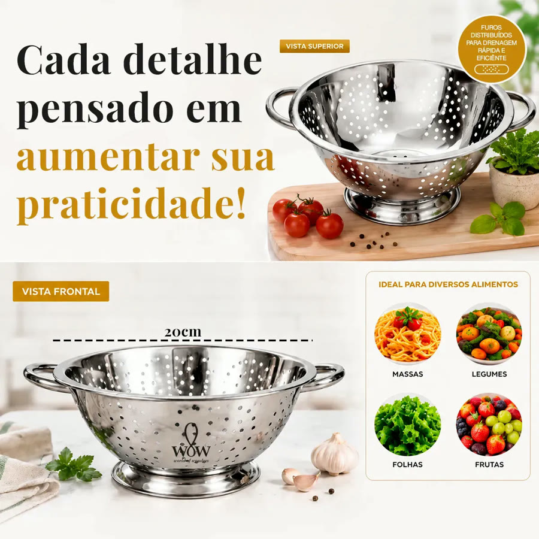
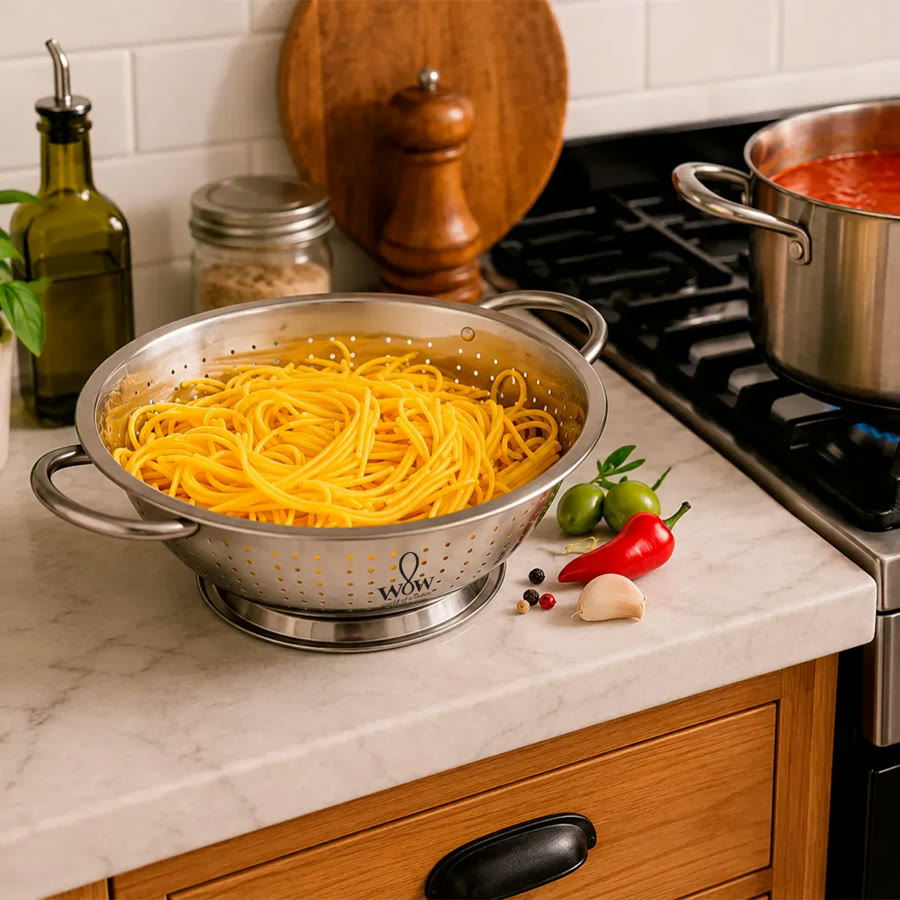
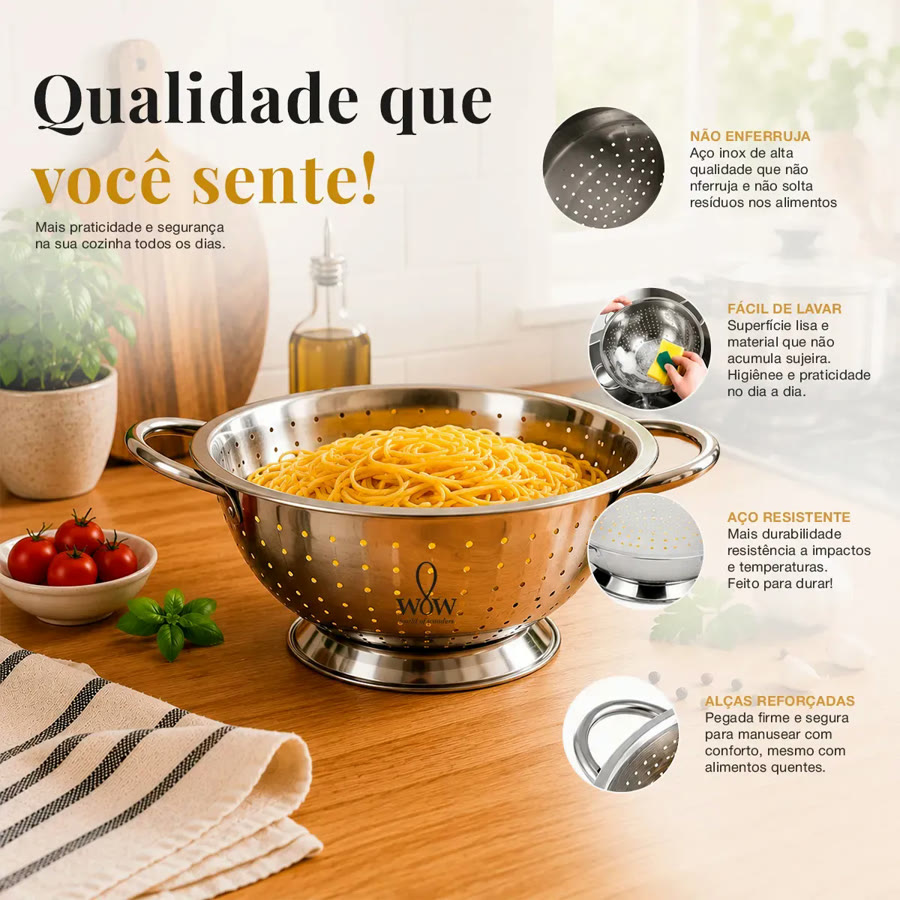

Achado nº 44
Escorredor de macarrão e arroz em aço inox com alças, 20 cm




O que diz a página oficial do produto
- É um escorredor de aço inox com furinhos no corpo todo, duas alças laterais e um pé de apoio
- Mede 20 cm de diâmetro e 8 cm de profundidade
- Segundo o anúncio, serve para macarrão, arroz, legumes e frutas
- Segundo o anúncio, não enferruja e as alças dão pegada firme mesmo com alimento quente
- Pode ir à lava-louças, segundo o anúncio
- Vem 1 escorredor
- No Mercado Livre, tem nota 4,5 com mais de 2.200 avaliações e mais de 10 mil vendidos
Link de afiliado: se você comprar por ele, a Achadaria pode receber uma comissão, sem custo extra para você. Preço, estoque e entrega são da loja e podem mudar; confira lá antes de comprar.